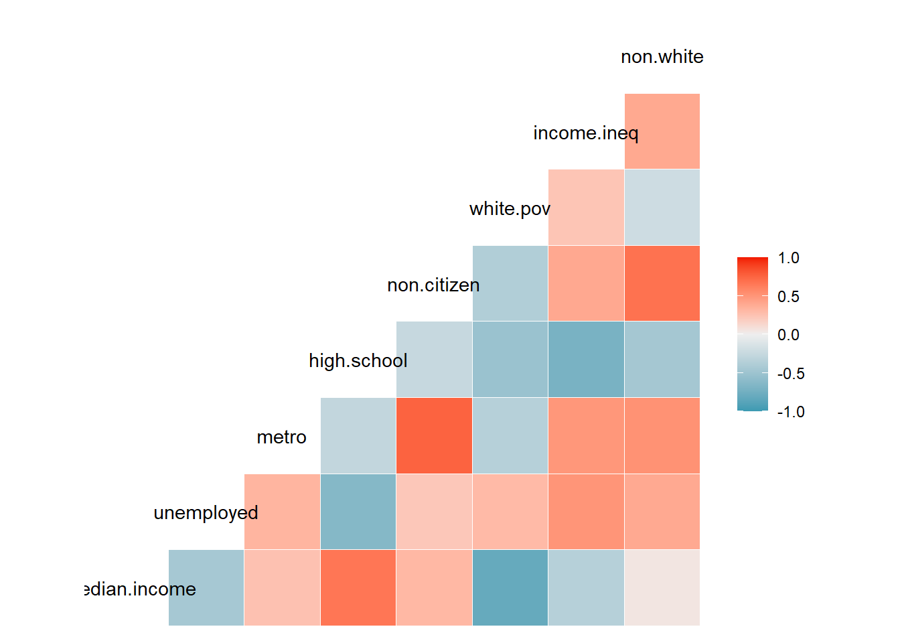
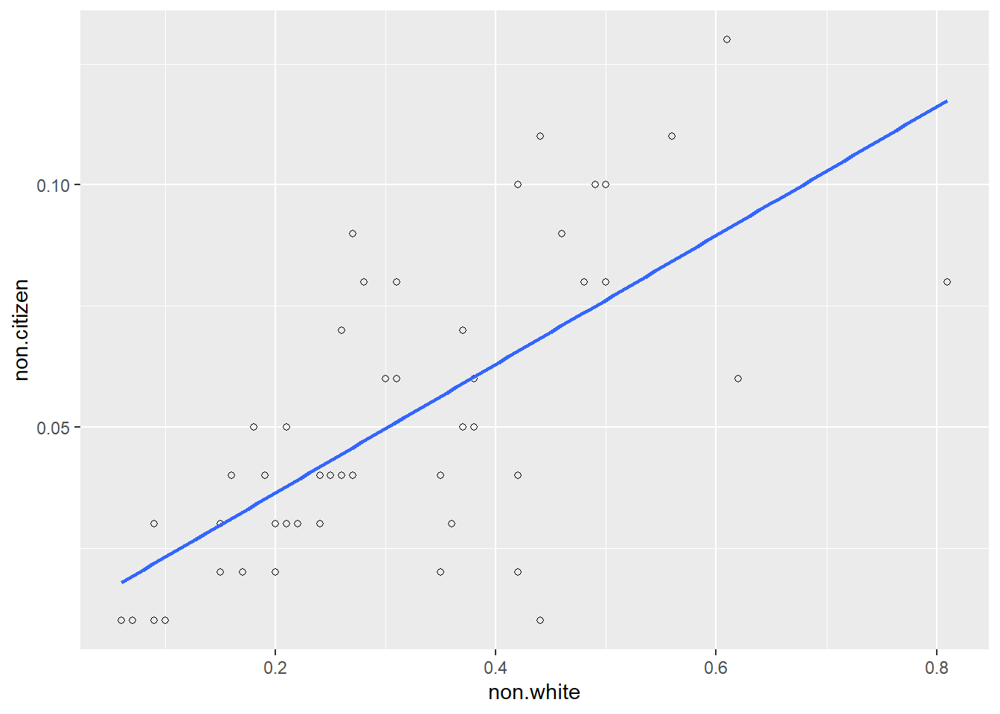
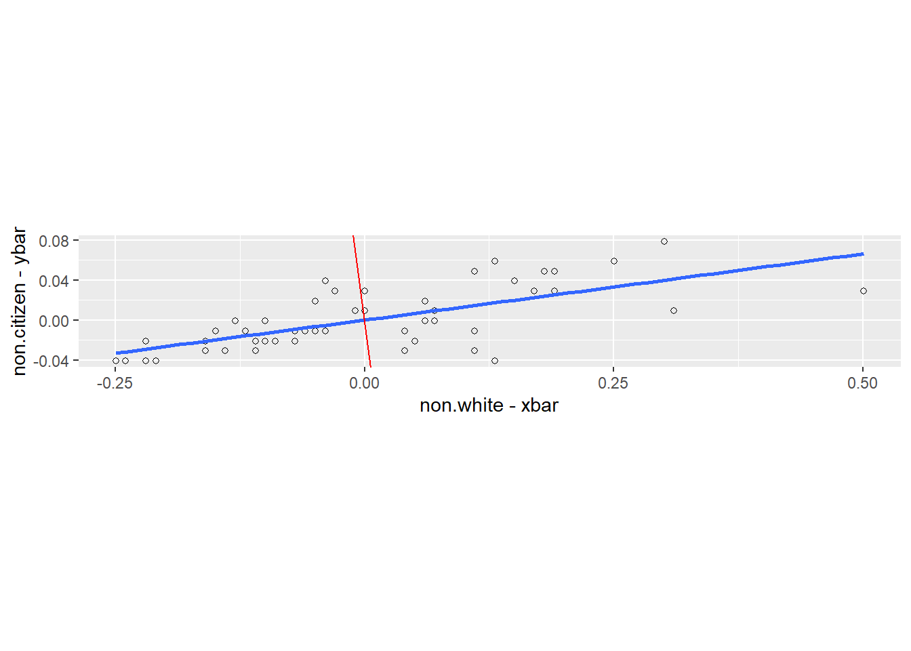
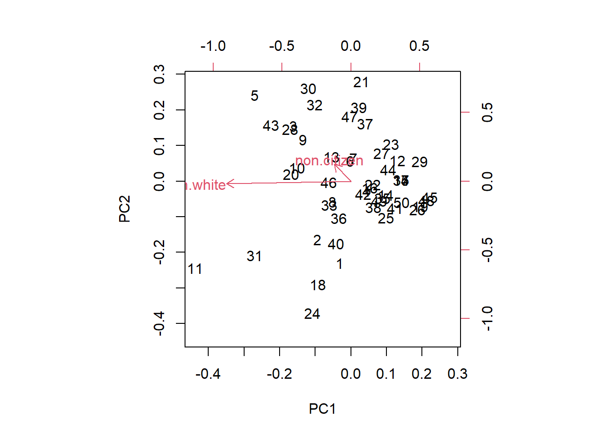
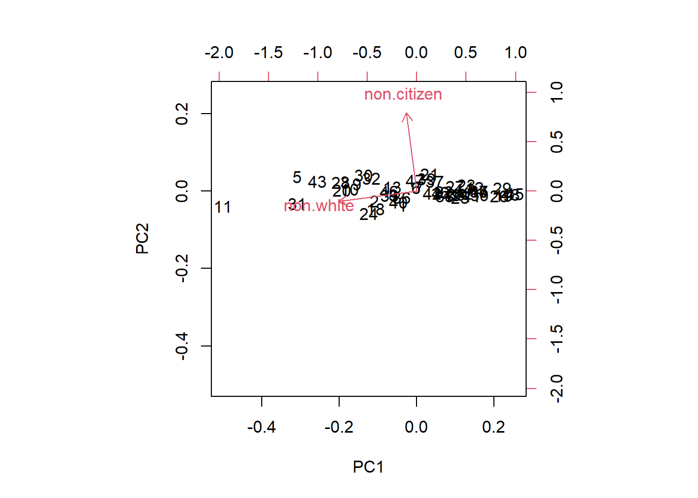
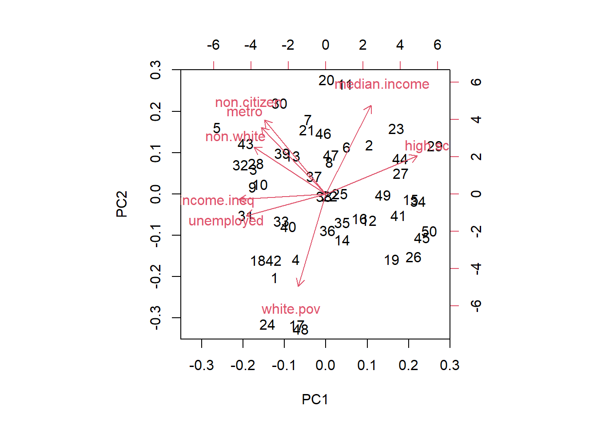
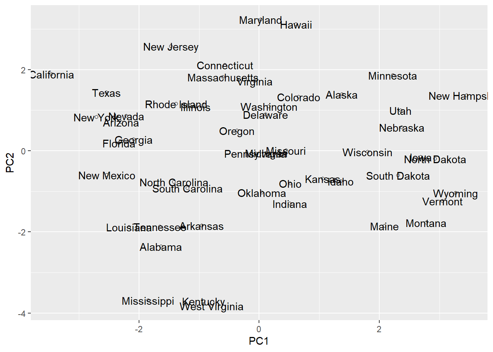
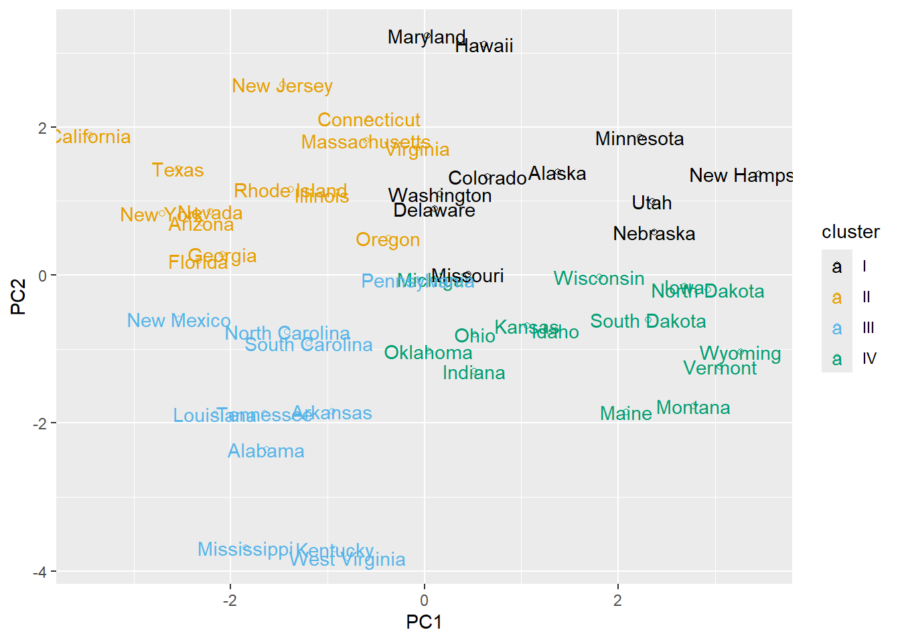
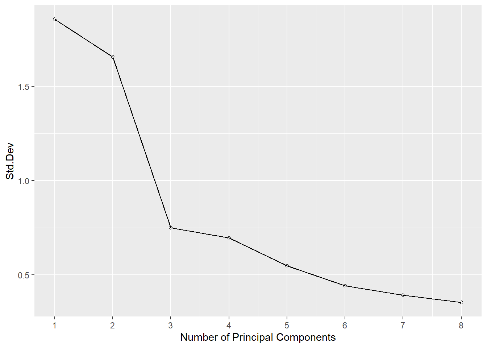

library(tidyverse)
df_url="https://raw.githubusercontent.com/jmayberr/math133-stat-learning-fall2026/refs/heads/main/Datasets/election2016.csv"
election2016=read.csv(df_url)
cb_palette <- c(
"#000000", # black
"#E69F00", # orange
"#56B4E9", # sky blue
"#009E73", # bluish green
"#F0E442", # yellow
"#0072B2", # blue
"#D55E00", # vermillion
"#CC79A7" # reddish purple
)Module 5.1: Principal Component Analysis
Introduction: Supervised vs. Unsupervised Methods
Thus far in the course, all of our examples have taken the following flavor: we have some response variable \(Y\) and some set of predictors \(X_1,...,X_p\) which we want to use to predict \(Y\). For example, if \(Y\) is numeric, we can use OLS or one of its cousins (subset selection, lasso, etc) to fit a linear model \(Y=XB+\varepsilon\). This is called a regression problem. If \(Y\) is categorical, we can use logistic regression (or KNN) and this is called a classification problem.
Both regression and classification problems fall under the framework of supervised methods because models are fit based on a pre-specified target of responses. In contrast, unsupervised methods apply when you don’t know the outcomes. In such scenarios, the goal is to identify appropriate ways of grouping predictors. For example, Spotify may want to group together users based on past listening histories and then target groups with specific listening recommendations.
We will discuss two types of unsupervised methods in this module:
- Principal Component Analysis (PCA) where samples are grouped based on linear combinations of predictors.
- Cluster Analysis where items are grouped based on similarities in variable measurements
These notes will focus on the former because it also provides a smooth transition from the topic of last module as it is often used for “dimension reduction”. We’ll see this application later in the notes.
Idea behind principal components
We have frequently used the election2016 data set as an example of supervised learning using both the trump.vote proportion and outcome (red or blue) as response variables. But suppose our interest instead is not to predict, but just to group like states together for the purposes of political or economic planning. Is there a simple way of doing so based on the eight demographic-ish variables we previously used as predictors? First, let’s reload the dataset, tidyverse package, and my favorite colorblind friendly palette which we will use throughout this module:
The states live in eight dimensional space1 when looked at in this way so it might be a little hard to “see” any groupings. But as previously noted in Module 4.2, many of the predictors are heavily correlated with each other:
library(GGally)
ggcorr(election2016[,2:9])
Looking at these graphics we can see, for example, that there is a very high positive correlation between non.white, non.citizen, and metro. Does it make sense to include all three variables in our model or is there a single variables (such as the average of the three) which might be sufficient to capture their combined effect?
Principal Component Analysis (PCA) attempts to find “optimal” linear combinations of predictors to use as alternative features in a linear model. In other words, PCA attempts to replace a set of predictors \(X_1,..,X_p\) with a new set of variables \(U_1,..,U_q\) such that the \(U_i\) capture the essential information about the \(X_i\)s but with a fewer number \(q < p\) variables. Whereas the original predictors \(X_i\) may have correlations, we would like the \(U_i\) to be uncorrelated with each other so that each is capturing as much of the variance in features as possible.
The rotation matrix
Let’s start by illustrating this idea with the two variables non.white and non.citizen. Our goal will be to represent each observation (non.white,non.citizen) in a new orthogonal coordinate system \((u_1,u_2)\) such that the first coordinate captures as much of the spread as possible while the second coordinate picks up the remainder. In other words, we would like to create a new set of orthogonal directions for getting to a particular (non.white,non.citizen) pair which goes as far as possible in the first step and then only has minimal distance to travel in the second step. Amazingly, the choice of directions ends up being based on the least squares line.
Hopefully, a visual will help better explain this idea. First, here is a scatterplot of non.white vs non.citizen with the least squares line
ggplot(election2016,aes(x=non.white,y=non.citizen))+
geom_point(shape=1)+geom_smooth(method=lm,se=FALSE)
Now suppose we “center” the two variables (so that the mean is at the origin) and also show the line orthogonal to the least squares one:
xbar=mean(election2016$non.white)
ybar=mean(election2016$non.citizen)
m=coef(lm(non.citizen~non.white,data=election2016))[2]
ggplot(election2016,aes(x=non.white-xbar,y=non.citizen-ybar))+
geom_point(shape=1)+geom_smooth(method=lm,se=FALSE)+
geom_abline(slope=-1/m,color="red")+coord_fixed()
I just want to reach in there and rotate this so that the blue line is the new x-axis and the red is the new y. This type of transformation is called a change of basis in Linear Algebra and it is the basis of PCA (pun totally intended).
Changing bases allows us to give directions to a particular point \((x_1,x_2)\) in new ways. Instead of “travel \(x_1\) units left and \(x_2\) units right”, we can travel \(u_1\) units in the direction of the blue line and then \(u_2\) in the direction of the red. For the data above, this seems more efficient: the blue direction covers more of the “spread” or “variance” in the data while the red helps get us the rest of the way home.
The coordinates \((u_1,u_2)\) are called the Principal Component Scores of \((x_1,x_2)\) while the directions given by the blue and red lines are the first and second principal components. Both the first and second principal components \(U_j\) are linear combinations of \(X_1,X_2\) so \[ U_j = v_{1j} X_1 + v_{2j} X_2 \] where here, \(X_1,X_2\) refer to the centered versions of non.white and non.citizen. The coefficients \(v_{ij}\) are called the loadings and the matrix \(V\) containing the loadings is called the rotation matrix . They can be calculated using the prcomp function in R2.
states_pc=prcomp(election2016[,c("non.white","non.citizen")])
states_pc$rotation PC1 PC2
non.white -0.9909546 -0.1341973
non.citizen -0.1341973 0.9909546The output here means that the first principal components loadings (column PC1 of rotation matrix) are \(-0.991\) and \(-0.134\) (rounded). More specifically, this means that that the first PC is computed as \[ PC_1 = -0.991*(non.white-mean(non.white))-0.134*(non.citizen-mean(non.citizen)) \]
Similarly, the loadings for the second principal component are given by the second column of the loadings matrix. Notice that \(PC_1, PC_2\) are orthogonal (the dot product of their loading vectors is 0) which is the geometric equivalent of uncorrelated. One can also get the PC coordinates for the original points as follows.
head(states_pc$x) PC1 PC2
[1,] -0.036072643 -0.036168003
[2,] -0.108123413 -0.025742719
[3,] -0.185542074 0.024320750
[4,] 0.050429329 -0.004271156
[5,] -0.308482548 0.037945717
[6,] -0.001802348 0.008838073These show the transformed coordinates for each observation in the dataset. For example, looking at the first state in our dataset
election2016[1,c("state","non.white","non.citizen")] state non.white non.citizen
1 Alabama 0.35 0.02This state has been transformed to the new coordinates3
states_pc$x[1,] PC1 PC2
-0.03607264 -0.03616800 Biplots
An additional tool for visualizing the relationship between the rotated PCs and the original variables is called a biplot. There are two main types: distance and correlation. Both are based upon different scalings of the rotation matrix4 The former emphasizes clustering of observations while the latter emphasizes correlations between variables. Correlation is the default so let’s look at that first:
biplot(states_pc)
The red vectors are the (scaled) coordinates of non.white and non.citizen in terms of (PC1, PC2). The acute angle between non.white and non.citizen indicates a positive correlation between the two variables.
For a distance biplot, switch to scale=0:
biplot(states_pc,scale=0)
Now the angle between the variables is meaningless but the points are plotted at their coordinates in PC space; more on this shortly.
Explained Variance
As previously mentioned, one goal of principal components is to describe as much of the variance in our data as possible from as few components as possible. To quantify this in PCA, we look at the proportion of variance for component \(i\) which is defined as \(s_i^2/\sum s_j^2\) where \(s_i\) is the standard deviation of component \(i\). Notice this is the variance of component \(i\) divided by the total variance of all components. Using our output, we can calculate the proportion of variance explained by each PC using the command
states_pc$sdev^2/sum(states_pc$sdev^2)[1] 0.98146661 0.01853339Alternatively, you can get them from the summary function
summary(states_pc)Importance of components:
PC1 PC2
Standard deviation 0.1617 0.02222
Proportion of Variance 0.9815 0.01853
Cumulative Proportion 0.9815 1.00000The results tell us that PC1 explains over 98% of the variance in (non.white,non.citizen) measurements and PC2 only gets about 2%. This can kind of be seen in the distance biplot where you’ll notice most points spread out along the \(x\)-axis. We conclude that these two variables can be summarized by a single variable which is simply the first principal component.
Many become fewer
The PCA framework can easily extend to more than two predictors. For example, let’s look at the full principal component decomposition for our predictors in the election2016 dataset. Note that we are adding the scale=TRUE command which scales each variable by its standard deviation prior to computing the principal components. This is important here because the variable median.income is on a completely different scale than the other variables and would dominate the PCs if not scaled.
states_pc_full=prcomp(election2016[,2:9],scale=TRUE)
summary(states_pc_full)Importance of components:
PC1 PC2 PC3 PC4 PC5 PC6 PC7
Standard deviation 1.8543 1.6547 0.74950 0.69703 0.54924 0.4418 0.39268
Proportion of Variance 0.4298 0.3422 0.07022 0.06073 0.03771 0.0244 0.01927
Cumulative Proportion 0.4298 0.7720 0.84226 0.90300 0.94070 0.9651 0.98438
PC8
Standard deviation 0.35354
Proportion of Variance 0.01562
Cumulative Proportion 1.00000Notice that the first PC describes only about 43% of the predictor variance between states, but keep in mind that we are now trying to summarize eight variables with one so that’s better than the 12.5% we would get by just randomly choosing one of eight directions! The first two principal components together5 explain more than 77% of the variance in all eight variables. After that, we don’t gain much per additional component.
These results suggest we may be able to summarize all eight predictors with just those first two specially chosen linear combinations given by PC1 and PC2. Let’s look at how those first two components are related to our original variables via a correlation biplot:
biplot(states_pc_full)
Notice (feels like I am saying that a lot in these notes) how certain groups of variables are clustered together like non.citizen, metro, and non.white. This indicates the high amount of correlation between these variables. Vectors pointing in opposite directions indicate negative correlation (for example, white.pov and median.income). Vectors pointing in orthogonal directions indicate very little correlation (eg. high school and metro)
To interpret what PCs mean for the states, let’s switch to a distance plot:
biplot(states_pc_full)
We make the following observations6 * States with positive PC1 and PC2 (upper right) have high median income and high school graduation rates with low white.pov * States with positive PC1 but negative PC2 (upper left) are very metropolitan and diverse * States with negative PC1 and PC2 are poor and less educated with high unemployment and white.pov rates. * Points with positive PC1 but negative PC2 are very white and rural
With these observations in mind, let’s look at a plot of the PC scores labeled by states
electionPC=cbind(election2016,states_pc_full$x[,1:2])
electionPC |>
ggplot(aes(x=PC1,y=PC2,label=state))+
geom_point(shape=1)+
geom_text()
How do our observations about the meaning of the principal components match up with what you know about the states? We leave it to the reader to decide7.
How is PCA unsupervised learning?
So far, what we have done is start to visually group states together based on where they lay in this two-dimensional plot. Let’s do something a little more concrete by placing groups into “clusters” based on which quadrant they fall in:
electionPC$cluster=ifelse(electionPC$PC1>0&electionPC$PC2>0,"I",
ifelse(electionPC$PC1<0&electionPC$PC2>0,"II", ifelse(electionPC$PC1<0&electionPC$PC2<0,"III", "IV")))
ggplot(electionPC,aes(x=PC1,y=PC2,label=state,col=cluster))+
geom_point(shape=1)+
geom_text()+
scale_color_manual(values=cb_palette[1:4])
#c("black","#e35205","#56B4e9","#009e73")And voila, we have classified the states in some new and bizarre way. Is this useful? How the hell should I know? I’m just a mathematician. Go ask your political science buddies.
PCA as dimension reduction
PCA can also be used in feature selection, but with a very different approach from complexity metrics or regularization. Instead of trying to choose a subset of features, it tries to reduce the number of variables by removing unnecessary correlations. For example, suppose that we use the component scores in a model for trump.vote instead of our original eight features. These can be added to the original data using the following
electionPC_full=cbind(election2016,states_pc_full$x)
names(electionPC_full) [1] "state" "median.income" "unemployed" "metro"
[5] "high.school" "non.citizen" "white.pov" "income.ineq"
[9] "non.white" "trump.vote" "outcome" "PC1"
[13] "PC2" "PC3" "PC4" "PC5"
[17] "PC6" "PC7" "PC8" All eight PC score variables were added to the dataset. The full model for trump.vote had an \(R^2\) value of around
full_lm=lm(trump.vote~.,data=election2016[,2:10])
summary(full_lm)$r.squared[1] 0.6510282Now suppose we use the first three PCs (which accounted for over 80% of the total variance):
pcs_lm=lm(trump.vote~PC1+PC2+PC3,data=electionPC_full)
summary(pcs_lm)$r.squared[1] 0.5354155Not too much worse. If you look at the best three variable model its better though:
best3_lm=lm(trump.vote~median.income+non.citizen+income.ineq,data=electionPC_full)
summary(best3_lm)$r.squared[1] 0.573087so maybe in this case dimension reduction is not the way to go. The problem is that PCA doesn’t do anything to account for the importance of variables in their explanation of trump.vote so there isn’t a great reason to expect its components do well as predictors. Another tool called partial least squares adjusts for predictive purposes, but we won’t have time to cover it in these notes8.
Issue with PCA
The problem with using PCA for unsupervised learning is twofold. First, there are no great rules for choosing how many PCs to look at in classifying points. A scree plot is one commonly used tool for this purpose which plots the standard deviations of the principal components (singular values of the centered model matrix/eigenvalues of the covariance matrix) vs component number and looks for “elbows9”
scree=data.frame(Component=1:8,Std.Dev=states_pc_full$sdev )
ggplot(scree,aes(x=Component,y=Std.Dev))+
geom_point(shape=1)+
geom_line()+
scale_x_continuous(name="Number of Principal Components",
breaks=1:8,label=1:8)
It seems like this plot has an “elbow” around PC3 so we could justify using three principal components. On the other hand, it bends at a weird angle after tat so should the elbow be higher at 6? It’s inexact enough that you can see why it’s qualitative. Others use an exact cutoff to decide on PCs, for example, choose enough PCs to account for 90% of the variation. This is a little more quantitative but may add too many PCs. And once we get past two, we lose the powerful visualization tools of biplots anyways so there may not be much point.
A second issue with principal component analysis is deciding on boundaries between clusters of like points. For example, should Maryland and Hawaii really go with the other “black” states even though they are kind of off in their own little world? And some states that are pretty close together end up in different clusters (like Oregon and Delaware). Clustering methods get around this issue by developing an algorithm for “combining” points into “optimal clusters.” For these reasons, other algorithms which actually have clustering in the name are often preferable for unsupervised learning10. Those will be the topic of the next two sections.
Practice
The dataset pitchers.csv in the shared folder has all complete observations of MLB pitchers by season from 1871-2021.
- Perform PCA on columns 6-29 and look at the proportion of variance explained by each component. Is there a sharp drop-off (a scree plot could be helpful to see)?
- Look at a correlation biplot (it may take a while to create and you may have to zoom in to see it better). Which variables are positively correlated? Which are negative? Which are uncorrelated? (You don’t have to list all; just give some examples)
- Look at a distance biplot. What does it mean for pitchers to have positive PC1? What about negative PC2? If you know anything about baseball, any guesses what these components could represent?
Bonus Tasks:
- Define a new variable with takes on the value of “starter” if pitching.GS/pitching.G >=0.5 and reliever otherwise. Replot the first two principal compoents colored by this new variable. Do the principal components seem to separate points?
- Find Jeff Ridgeway, 2007 in the PC plot and look up his story. Do you think he’s proud of being an outlier?
- Find Mike Marshall, 1974. Is he proud of being an outlier?
Footnotes
Even if all our states can be a bit one-dimensional at times.↩︎
Confusingly, there is another base function princomp which also does PCA, but in a less stable way; more on computation of principal components in the Module 5 Theory supplement↩︎
Stored as x instead of scores for prcomp.↩︎
See Module 5 Theory supplement for details.↩︎
The \(i\)th entry in the cumulative proportion row tells you the cumulative proportion of variance explained by the first \(i\) components in case that isn’t obvious.↩︎
Notice I avoided saying notice again. Ah crap, I did it anyways.↩︎
I can’t help but point out my home state of CA though which has the lowest value of PC1 and a high PC2. This is because CA is above average in diversity and metropolitan-ness (negative PC1) but has a high median income and low white poverty rate both of which require a high PC2 to offset the negative effects from PC1.↩︎
Gotta save some fun for those late night AI dives.↩︎
The name scree plot comes from the connection to elbows.↩︎
Although as we’ll see they can be used in conjunction with PCA.↩︎